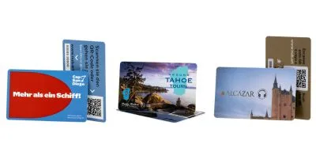
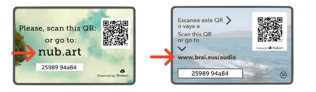

Ce dont nous avons besoin pour produire votre audioguide
Cette page sert de référence tout au long du processus de production. Toutes les sections de cette page ne s’appliquent pas à tous les projets. Votre responsable de production vous guidera à travers les parties pertinentes.
L’objectif de Nubart est de réduire au maximum votre charge de travail. Il vous suffit de télécharger les éléments de base ci-dessous dans votre espace client Nubart, sous « Assets », et nous nous occupons du reste ! Cela inclut le formatage et la conversion des fichiers audio, image ou vidéo.
- Votre logo
- Votre script ou vos pistes audio
- Quelques images
Les cartes
Une fois votre commande reçue, nous vous contacterons avec notre designer pour concevoir le design de la carte. Vous pouvez faire des suggestions et choisir parmi plusieurs options.

Notre designer créera 2 à 3 propositions de design que vous pourrez faire évoluer jusqu'à entière satisfaction.
Si vous préférez que votre équipe graphique interne réalise le design, merci d'en informer votre responsable de production : elle vous fournira les directives nécessaires.
Pour le verso de la carte, nous proposons 8 modèles de mise en page standard et nous vous aiderons à choisir la solution la plus adaptée.
Bien entendu, nous vous demanderons votre validation avant de lancer l'impression.
Besoin d'inspiration ? Parcourez notre galerie clients pour découvrir des cartes conçues pour d'autres musées et institutions.
Points à vérifier avant validation pour l'impression :
- Couleurs sombres : Les fonds foncés et les couleurs saturées apparaissent généralement plus sombres à l'impression qu'à l'écran. Si votre design est très foncé, demandez conseil à notre graphiste avant de le valider.
- Vérifiez la lisibilité à taille réelle : Consultez le PDF à un zoom de 100 % pour voir la carte à sa taille d'impression réelle, et assurez-vous que tous les textes, logos et détails restent lisibles.
- Couleurs de marque exactes (Pantone) : L'impression CMJN standard ne reproduit pas toujours fidèlement les couleurs corporatives. Si une correspondance précise est importante, prévenez-nous à l'avance, car l'impression Pantone a une incidence sur le coût.
- Finition mate ou brillante : Sur des cartes PVC aux couleurs foncées, une finition mate offre généralement des couleurs plus fidèles et une meilleure résistance aux rayures qu'une finition brillante.
- Pas d'épreuves d'impression : Nous ne fournissons pas d'épreuves d'impression physiques. Le PDF de design validé et les cartes d'échantillon que vous avez reçues avant la commande servent de référence pour le résultat final.
- Responsabilité : Avant de donner votre accord, veuillez consulter nos Conditions Générales concernant les défauts et la responsabilité pour les cartes imprimées.
Veuillez l'envoyer au format SVG ou PNG avec un fond transparent.
Nous vous conseillons toujours d'utiliser notre domaine nub.art.
Mais, si nécessaire, nous pouvons également imprimer le domaine de votre site web et le rediriger.
Si nécessaire, nous pouvons également imprimer le domaine de votre site web et le rediriger. Pour ce faire, demandez à votre webmaster de créer un sous-domaine, par exemple www.monmusee.com/guide et de le rediriger vers nub.art.
Veuillez vous assurer que ce sous-domaine est créé de façon permanente et que la redirection reste active. Nous n'acceptons aucune responsabilité pour les cartes qui ont perdu leur fonctionnalité en raison d'une redirection incorrecte ou d'un sous-domaine inactif.

Le contenu
Vous recevrez une invitation à vous enregistrer dans votre espace client. Vous pourrez y télécharger le contenu que vous souhaitez que nous intégrer dans votre audioguide. Nous vous attribuerons également un chef de projet avec lequel vous pourrez clarifier toutes vos questions.
Nous avons uniquement besoin de photos des objets audioguidés. Veuillez nous envoyer les images au format JPG ou PNG et avec une largeur minimale de 700 px, c'est tout ! Nous nous chargerons de les recadrer, de les redimensionner et de les adapter à votre audioguide.
Vous pouvez décider si vous préférez les images en vignettes, en grand format ou sous forme de curseur d'images (jusqu'à 15 images).
Veuillez nous informer si une image est soumise à des restrictions de droits d'auteur afin que nous puissions rechercher une solution alternative. Si vous le souhaitez, moyennant un supplément, nous pouvons nous charger de la gestion des droits de vos images.
Nous utilisons un format équirectangulaire léger (un seul fichier d'image). Pour garantir le support de tous les appareils, la taille de l'image doit être de max. 4096 px de large.
Gardez à l'esprit : notre mode hors ligne totale n'est pas compatible avec les vidéos !
Si Nubart doit produire le script
- Conseils généraux sur le ton et le style que vous souhaitez pour votre audioguide : purement informatif, informel ou plus académique, pour un public averti ou non...
- Liste des points d'intérêt (POI) à inclure dans l'audioguide.
- 2-5 mots-clés sur les idées à véhiculer par POI.
- Coordonnées des commissaires de l'exposition pour poser des questions ou demander des informations.
Si Nubart produit les pistes audio
Si Nubart doit également créer le script, un membre de notre équipe vous contactera (voir ci-dessus).
Informations supplémentaires requises
Deux des questions sont incluses par défaut : la notation de l'émission de 1 à 5 et un champ de commentaire libre.
Vous pouvez choisir les trois autres questions dans cette liste :
- Âge
- Genre (Les réponses prédéfinies à cette question sont "homme", "femme" et "autre").
- C'est votre première visite ?
- Pays
- Code postal
- L'audioguide a-t-il contribué à une meilleure compréhension de l'exposition ?
- Quels autres sujets pourraient être abordés dans l'audioguide ?
- Recommanderiez-vous cet audioguide ?
- Où avez-vous acheté cet audioguide ?
Ce service peut être annulé à tout moment sur demande (par exemple si vous recevez trop d'e-mails de feedback) : les commentaires de vos visiteurs sont toujours aussi disponibles dans votre espace client.